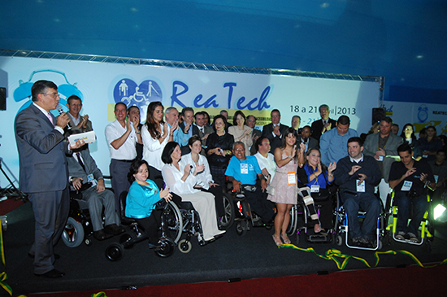

Reatech 2013 é aberta difundindo tecnologia acessível para pessoa com deficiência
Expectativa é que 50 mil visitantes compareçam ao Centro de Exposições Imigrantes até domingo
A XII Feira Internacional de Tecnologias em Reabilitação, Inclusão e Acessibilidade foi aberta ao público nesta quinta-feira (18 de abril), no Centro de Exposições Imigrantes em São Paulo. O evento, promovido e organizado pelo Grupo Cipa Fiera Milano, traz 300 expositores, que apresenta as novas tecnologias acessíveis, produtos e serviços para pessoas com deficiência, em uma área de 32 mil metros quadrados, tendo como estimativa de público 50 mil visitantes. Para abrilhantar a solenidade de abertura, a cantora italiana Mafalda Minnozzi cantou para o público a canção “Esperança”.
José Roberto Sevieri, diretor de Operações do Grupo Cipa Fiera Milano, promotor e organizador da Reatech, afirmou que, este ano, a feira traz o despertar e um novo olhar sobre a realidade dos mais de 45 milhões de brasileiros (9 milhões somente no Estado de São Paulo) com algum tipo de deficiência que enfrentam dificuldades de acesso à saúde, ao trabalho, às atividades culturais e sociais.“Este ano, decidimos destacar que o mundo da pessoa com deficiência existe e tem que ser respeitado, pois já há legislação, que precisa ser colocada em prática. Agora, temos que parar de falar das necessidades. Chega de esperar e ver a boa vontade das pessoas. A questão da pessoa com deficiência tem lei e os prédios públicos devem estar adaptados. Infelizmente, o prazo já venceu e ainda não aconteceu. Chega! Por isso, nosso lema aqui nesta Reatech é: “desperta para a inclusão”, ressaltou.
Estiveram presentes na cerimônia de abertura da Reatech inúmeras autoridades, ligadas direta e indiretamente à questão das pessoas com deficiência. “A secretaria tem um trabalho fundamental de interlocução entre as secretarias do governo federal e do governo estadual. Precisamos construir os direitos das pessoas com deficiência na cidade, de forma que permeiem todas as áreas de trabalho do município de São Paulo. Pretendemos também trabalhar onde essas pessoas vivem para dialogar e agir em prol da melhora da qualidade de vida e em defesa de seus direitos. Vamos fazer esse elo de discussão e resolução dos problemas nas diferentes regiões da cidade”, disse Marianne Pinotti, secretária Municipal da Pessoa com Deficiência e Mobilidade Reduzida de São Paulo, que representou o prefeito da cidade de São Paulo, Fernando Haddad.
O deputado federal Arnaldo Faria de Sá afirmou que Sevieri sempre foi um visionário nessa luta em defesa das pessoas com deficiência. “Ontem, o Congresso Nacional aprovou a aposentadoria especial para as pessoas com deficiência, reduzindo em 10 anos o tempo de contribuição”, contou o deputado.
Rosinha da Adefal, deputada federal e cadeirante, aproveitou a ocasião para falar da conquista da lei da aposentadoria, ela que foi uma liderança para a aprovação da lei. “Estamos todos de parabéns, pois foram as pessoas de Alagoas que acreditaram e me colocaram no parlamento, todos que estavam conscientes e sensíveis, e toda a comissão de seguridade social que se engajou para aprovar essa lei. Alguns parlamentares com deficiência são acusados de legislar em causa própria, mas eu não acho ruim, pois se ninguém quer fazer isso por nós, precisamos nos fazer representar e chegar lá para fazer garantir os nossos direitos”, disse emocionada.
A deputada Célia Leão, cadeirante e engajada na luta das pessoas com deficiência, também deu as boas vindas aos visitantes. “Os deputados federais têm feito um trabalho na direção de garantir os direitos dos deficientes. Temos também dezenas de homens e mulheres com algum tipo de deficiência que estão ocupando cadeiras no parlamento dos municípios, assim como prefeitos e vice-prefeitos, ou seja, é o grupo das pessoas com deficiência que vai ocupando espaço, pois isso é importante e necessário. Depende da nossa luta a conquista do que é básico: felicidade e dignidade”, afirmou.
A abertura contou ainda com a presença da Secretária de Estado dos Direitos da Pessoa com Deficiência, Linamara Rizzo Battistella, que lembrou que a Reatech ajuda a traduzir o direito das pessoas com deficiência, mostrando a força que esse segmento tem. “Amanhã vamos entregar o elevador que chega ao avião, que estará presente em todos os aeroportos regionais do estado de São Paulo para que cada um dos cadeirantes possa viajar com mais segurança e sem o constrangimento de ser carregado”, a secretária Linamara.
Para encerrar, Malu Sevieri, diretora de Marketing da Fiera Milano, afirmou que a Reatech é o segundo evento do setor do mundo. “A feira tem cada vez mais força em cada setor que tem influência na vida das pessoas com deficiência”, disse, acrescentando: este ano temos mais clientes de tecnologia assistida. Estamos trazendo clientes da Europa, da Ásia, dos EUA e da América do Sul”. Segundo ela, este ano o projeto da Reatech foi ampliado para Cingapura, em outubro, em Milão, na Itália, e em novembro, em Istambul, na Turquia. Para 2014, a Reatech estará em mais dois países, em Joanesburgo, na África do Sul, e Guadalajara, no México. “É um produto coordenado pelo Brasil, no formato brasileiro, que está sendo exportado para outros países, e isso é um orgulho para nós. Afinal, é a primeira vez que uma feira é exportada e essa feira é a Reatech”, finalizou.
Fonte Reatech.